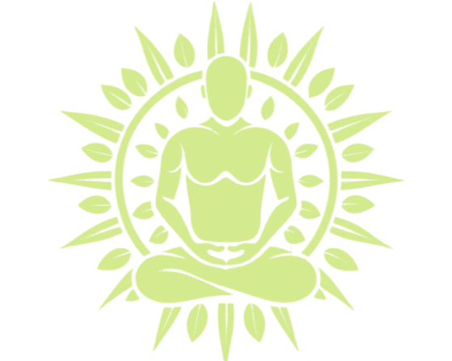

Monk Planner
☀

✕
Çalışma · 25dk
Mola · 5dk
Uzun Mola · 15dk
25:00
Sıfırla
Başla
+ Yeni Başlık
☯
Bir başlık seç veya yeni başlık oluştur
Habit Tracker
+
İstatistik
Bugün tamamlanan
0
Toplam görev
0
En uzun seri
0 gün